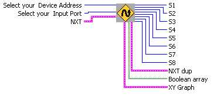
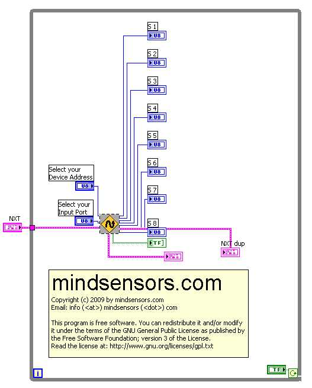

Inputs
Adress- This is where you select the adress of your NXTLineLeader
the
factory default is 2.
Input Port
- This is where you input the
Input
Port your NXTLineLeader is
attached to.
Outputs
S1, S2..., S8- These are the individual sensor readings of the 8
sensors.
Boolean Array gives you a boolean array of all 8 sensors.
XY Graph gives you a graph showing all 8 sensors and their readings.
Sample Program

Sample located at
C:\Documents and Settings\User
Name\My Documents\LabVIEW Data\mindsesnors.com
LVHS\mindsensors.com Sample
Programs\NXTLineLeader-SP\NXTLineLeader-Direct
Discuss Your Ideas>>